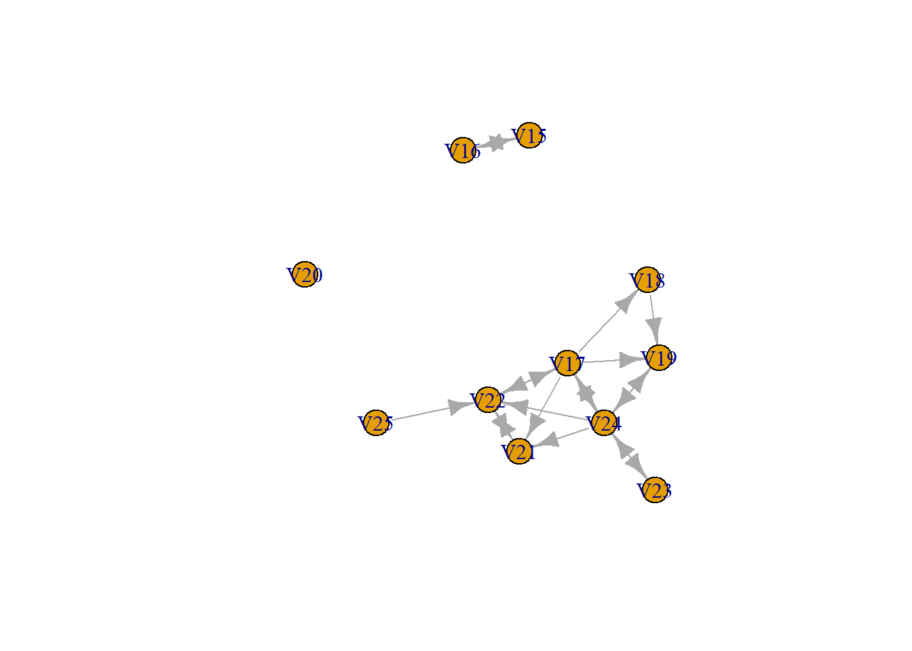
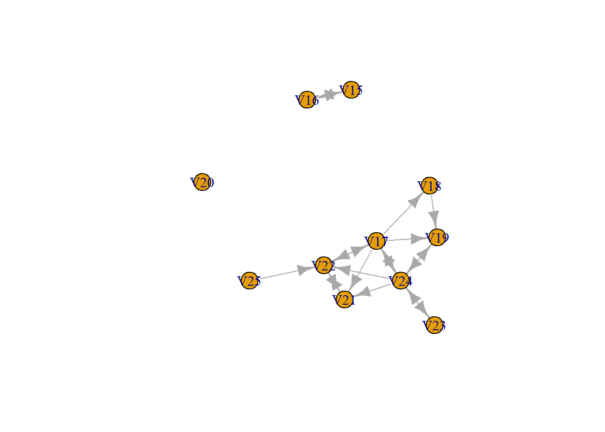

Last compiled on oktober, 2024
Packages
library(igraph)
library(RSiena)
# library(sna)
Make adjacency
matrix
df <- c(0, 0, 0, 0, 0, 0, 0, 0, 0, 0, 0, 0, 0, 0, 0, 0)
(AM_empty <- matrix(df, nrow = 4, ncol = 4))
#> [,1] [,2] [,3] [,4]
#> [1,] 0 0 0 0
#> [2,] 0 0 0 0
#> [3,] 0 0 0 0
#> [4,] 0 0 0 0
Insert 1 tie
df <- c(0, 0, 0, 0, 0, 0, 1, 0, 0, 1, 0, 0, 0, 0, 0, 0)
(AM_1 <- matrix(df, nrow = 4, ncol = 4))
#> [,1] [,2] [,3] [,4]
#> [1,] 0 0 0 0
#> [2,] 0 0 1 0
#> [3,] 0 1 0 0
#> [4,] 0 0 0 0
Triad census
# Empty graph
graph <- graph_from_adjacency_matrix(AM_empty, mode = "directed")
triad_census(graph)
#> [1] 4 0 0 0 0 0 0 0 0 0 0 0 0 0 0 0
# 1 inserted tie
graph2 <- graph_from_adjacency_matrix(AM_1, mode = "directed")
triad_census(graph2)
#> [1] 2 0 2 0 0 0 0 0 0 0 0 0 0 0 0 0
Social Network
net <- s501
small_net <- net[15:25, 15:25]
graph <- graph_from_adjacency_matrix(small_net, mode = "directed")
plot(graph)

Assignment
Give ego level descriptives on all types on centrality measures.
Density
#
dens <- function(N, data = net, directed = TRUE) {
if (directed == TRUE) {
pos_tie <- (N * (N - 1))
} else {
pos_tie <- (N * (N - 1))/2
}
obs_tie <- sum(sna::dyad.census(data)[1:2])
dens <- obs_tie/pos_tie
return(dens)
}
dens(10, small_net, directed = TRUE)
#> [1] 0.1444444
Degrees
# degree centrality
test_deg <- centr_degree(graph, mode = "out")
test_deg <- test_deg$res
for (i in 1:length(test_deg)) {
norm <- (test_deg[i] - max(test_deg))/(max(test_deg) - min(test_deg))
print(norm)
}
#> [1] -0.8
#> [1] -0.8
#> [1] 0
#> [1] -0.8
#> [1] -0.8
#> [1] -1
#> [1] -0.8
#> [1] -0.6
#> [1] -0.8
#> [1] 0
#> [1] -0.8
centr_degree(graph, mode = "out", normalized = FALSE)
#> $res
#> [1] 1 1 5 1 1 0 1 2 1 5 1
#>
#> $centralization
#> [1] 36
#>
#> $theoretical_max
#> [1] 110
centr_degree(graph, mode = "out", normalized = TRUE)
#> $res
#> [1] 1 1 5 1 1 0 1 2 1 5 1
#>
#> $centralization
#> [1] 0.3272727
#>
#> $theoretical_max
#> [1] 110
# Closeness centrality
closeness(graph)
#> V15 V16 V17 V18 V19 V20 V21 V22 V23
#> 1.00000000 1.00000000 0.14285714 0.06666667 0.08333333 NaN 0.06250000 0.09090909 0.08333333
#> V24 V25
#> 0.14285714 0.05555556
# Betweenness centrality
test_bet <- betweenness(graph, directed = TRUE)
for (i in 1:length(test_bet)) {
norm <- (test_bet[i] - max(test_bet))/(max(test_bet) - min(test_bet))
print(norm)
}
#> V15
#> -1
#> V16
#> -1
#> V17
#> -0.1666667
#> V18
#> -1
#> V19
#> -0.7222222
#> V20
#> -1
#> V21
#> -1
#> V22
#> -0.3888889
#> V23
#> -1
#> V24
#> 0
#> V25
#> -1
LS0tDQp0aXRsZTogIkpvdXJuYWwgLSBXZWVrIDIiDQojYmlibGlvZ3JhcGh5OiByZWZlcmVuY2VzLmJpYg0KYXV0aG9yOiAiTmllbHMgVnVsbGluZ3MiDQpiaWJsaW9ncmFwaHk6IHJlZmVyZW5jZXMuYmliDQotLS0NCg0KYGBgez1odG1sfQ0KPHN0eWxlPg0KYm9keSB7DQp0ZXh0LWFsaWduOiBqdXN0aWZ5fQ0KPC9zdHlsZT4NCmBgYA0KDQpgYGB7ciwgZ2xvYmFsc2V0dGluZ3MsIGVjaG89RkFMU0UsIHdhcm5pbmc9RkFMU0UsIHJlc3VsdHM9J2hpZGUnfQ0KbGlicmFyeShrbml0cikNCg0Ka25pdHI6Om9wdHNfY2h1bmskc2V0KGVjaG8gPSBUUlVFKQ0Kb3B0c19jaHVuayRzZXQodGlkeS5vcHRzPWxpc3Qod2lkdGguY3V0b2ZmPTEwMCksdGlkeT1UUlVFLCB3YXJuaW5nID0gRkFMU0UsIG1lc3NhZ2UgPSBGQUxTRSxjb21tZW50ID0gIiM+IiwgY2FjaGU9VFJVRSwgY2xhc3Muc291cmNlPWMoInRlc3QiKSwgY2xhc3Mub3V0cHV0PWMoInRlc3QyIikpDQpvcHRpb25zKHdpZHRoID0gMTAwKQ0KcmdsOjpzZXR1cEtuaXRyKCkNCg0KDQoNCmNvbG9yaXplIDwtIGZ1bmN0aW9uKHgsIGNvbG9yKSB7c3ByaW50ZigiPHNwYW4gc3R5bGU9J2NvbG9yOiAlczsnPiVzPC9zcGFuPiIsIGNvbG9yLCB4KSB9DQoNCmBgYA0KDQpgYGB7ciBrbGlwcHksIGVjaG89RkFMU0UsIGluY2x1ZGU9VFJVRX0NCmtsaXBweTo6a2xpcHB5KHBvc2l0aW9uID0gYygndG9wJywgJ3JpZ2h0JykpDQojIGtsaXBweTo6a2xpcHB5KGNvbG9yID0gJ2RhcmtncmVlbicpDQoja2xpcHB5OjprbGlwcHkodG9vbHRpcF9tZXNzYWdlID0gJ0NsaWNrIHRvIGNvcHknLCB0b29sdGlwX3N1Y2Nlc3MgPSAnRG9uZScpDQpgYGANCg0KTGFzdCBjb21waWxlZCBvbiBgciBmb3JtYXQoU3lzLnRpbWUoKSwgJyVCLCAlWScpYA0KDQo8YnI+DQoNCi0tLS0tLS0tLS0tLS0tLS0tLS0tLS0tLS0tLS0tLS0tLS0tLS0tLS0tLS0tLS0tLS0tLS0tLS0tLS0tLS0tLS0tLS0tLS0tLQ0KDQojIyBQYWNrYWdlcw0KDQpgYGB7cn0NCmxpYnJhcnkoaWdyYXBoKQ0KbGlicmFyeShSU2llbmEpDQojIGxpYnJhcnkoc25hKQ0KYGBgDQoNCiMjIE1ha2UgYWRqYWNlbmN5IG1hdHJpeA0KDQpgYGB7cn0NCmRmIDwtIGMoMCwwLDAsMCwNCiAgICAgICAgMCwwLDAsMCwNCiAgICAgICAgMCwwLDAsMCwNCiAgICAgICAgMCwwLDAsMCkNCg0KKEFNX2VtcHR5IDwtIG1hdHJpeChkZixucm93PTQsbmNvbCA9IDQpKQ0KDQpgYGANCg0KIyMgSW5zZXJ0IDEgdGllDQoNCmBgYHtyfQ0KDQpkZiA8LSBjKDAsMCwwLDAsDQogICAgICAgIDAsMCwxLDAsDQogICAgICAgIDAsMSwwLDAsDQogICAgICAgIDAsMCwwLDApDQoNCihBTV8xIDwtIG1hdHJpeChkZixucm93PTQsbmNvbCA9IDQpKQ0KDQojICg0KjMqMioxKQ0KDQpgYGANCg0KIyMgVHJpYWQgY2Vuc3VzDQoNCmBgYHtyfQ0KIyBFbXB0eSBncmFwaA0KZ3JhcGggPC0gZ3JhcGhfZnJvbV9hZGphY2VuY3lfbWF0cml4KEFNX2VtcHR5LCBtb2RlID0gImRpcmVjdGVkIikNCg0KdHJpYWRfY2Vuc3VzKGdyYXBoKQ0KYGBgDQoNCmBgYHtyfQ0KIyAxIGluc2VydGVkIHRpZQ0KZ3JhcGgyIDwtIGdyYXBoX2Zyb21fYWRqYWNlbmN5X21hdHJpeChBTV8xLCBtb2RlID0gImRpcmVjdGVkIikNCg0KdHJpYWRfY2Vuc3VzKGdyYXBoMikNCmBgYA0KDQojIyBTb2NpYWwgTmV0d29yaw0KDQpgYGB7cn0NCm5ldCA8LSBzNTAxDQoNCnNtYWxsX25ldCA8LSBuZXRbMTU6MjUsMTU6MjVdDQoNCg0KZ3JhcGggPC0gZ3JhcGhfZnJvbV9hZGphY2VuY3lfbWF0cml4KHNtYWxsX25ldCwgbW9kZSA9ICJkaXJlY3RlZCIpDQoNCnBsb3QoZ3JhcGgpDQoNCg0KYGBgDQoNCiMjIEFzc2lnbm1lbnQNCg0KR2l2ZSBlZ28gbGV2ZWwgZGVzY3JpcHRpdmVzIG9uIGFsbCB0eXBlcyBvbiBjZW50cmFsaXR5IG1lYXN1cmVzLg0KDQojIyMgRGVuc2l0eQ0KDQpgYGB7cn0NCiMNCmRlbnMgPC0gZnVuY3Rpb24oTiwgZGF0YSA9IG5ldCwgZGlyZWN0ZWQgPSBUUlVFKXsNCg0KICBpZihkaXJlY3RlZCA9PSBUUlVFKXsNCiAgICBwb3NfdGllIDwtIChOKihOLTEpKQ0KICB9IGVsc2V7DQogICAgcG9zX3RpZSA8LSAoTiooTi0xKSkvMg0KDQogIH0NCg0KICBvYnNfdGllIDwtIHN1bShzbmE6OmR5YWQuY2Vuc3VzKGRhdGEpWzE6Ml0pDQogIGRlbnMgPC0gb2JzX3RpZS9wb3NfdGllDQoNCiAgcmV0dXJuKGRlbnMpDQp9DQpkZW5zKDEwLCBzbWFsbF9uZXQsIGRpcmVjdGVkID0gVFJVRSkNCg0KYGBgDQoNCiMjIyBEZWdyZWVzDQoNCmBgYHtyfQ0KI2RlZ3JlZSBjZW50cmFsaXR5DQp0ZXN0X2RlZyA8LSBjZW50cl9kZWdyZWUoZ3JhcGgsIG1vZGUgPSAib3V0IikNCnRlc3RfZGVnIDwtIHRlc3RfZGVnJHJlcw0KDQoNCmZvciAoaSBpbiAxOmxlbmd0aCh0ZXN0X2RlZykpew0KICANCiAgbm9ybSA8LSAodGVzdF9kZWdbaV0tbWF4KHRlc3RfZGVnKSkvKG1heCh0ZXN0X2RlZyktbWluKHRlc3RfZGVnKSkNCiAgcHJpbnQobm9ybSkNCn0NCg0KY2VudHJfZGVncmVlKGdyYXBoLCBtb2RlID0gIm91dCIsIG5vcm1hbGl6ZWQgPSBGQUxTRSkNCmNlbnRyX2RlZ3JlZShncmFwaCwgbW9kZSA9ICJvdXQiLCBub3JtYWxpemVkID0gVFJVRSkNCmBgYA0KDQpgYGB7cn0NCiMgQ2xvc2VuZXNzIGNlbnRyYWxpdHkNCmNsb3NlbmVzcyhncmFwaCkNCg0KYGBgDQoNCmBgYHtyfQ0KIyBCZXR3ZWVubmVzcyBjZW50cmFsaXR5DQp0ZXN0X2JldCA8LSBiZXR3ZWVubmVzcyhncmFwaCwgZGlyZWN0ZWQgPSBUUlVFKQ0KDQpmb3IgKGkgaW4gMTpsZW5ndGgodGVzdF9iZXQpKXsNCiAgDQogIG5vcm0gPC0gKHRlc3RfYmV0W2ldLW1heCh0ZXN0X2JldCkpLyhtYXgodGVzdF9iZXQpLW1pbih0ZXN0X2JldCkpDQogIHByaW50KG5vcm0pDQp9DQoNCg0KYGBgDQoNCmBgYHtyfQ0KDQpgYGANCg==
0.5 Social Network
